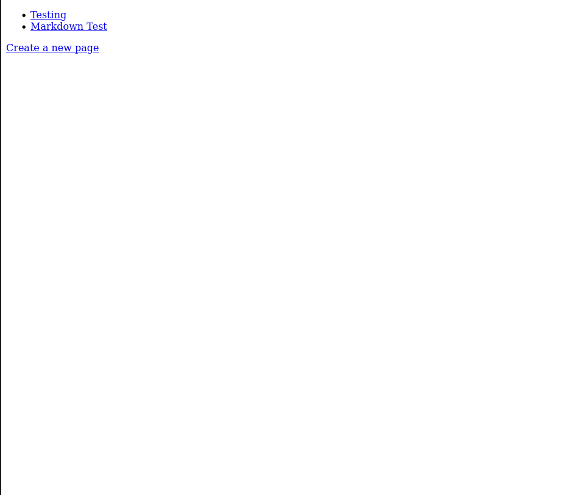
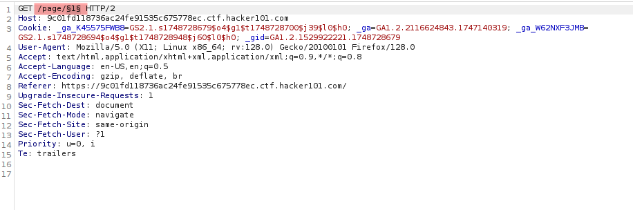
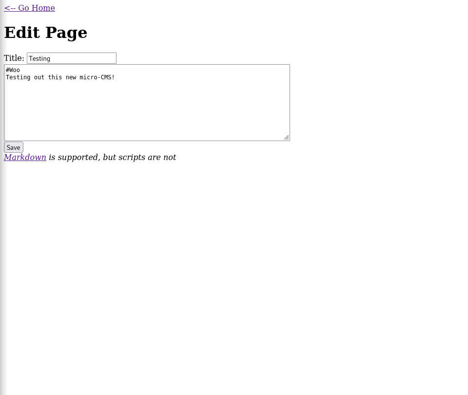
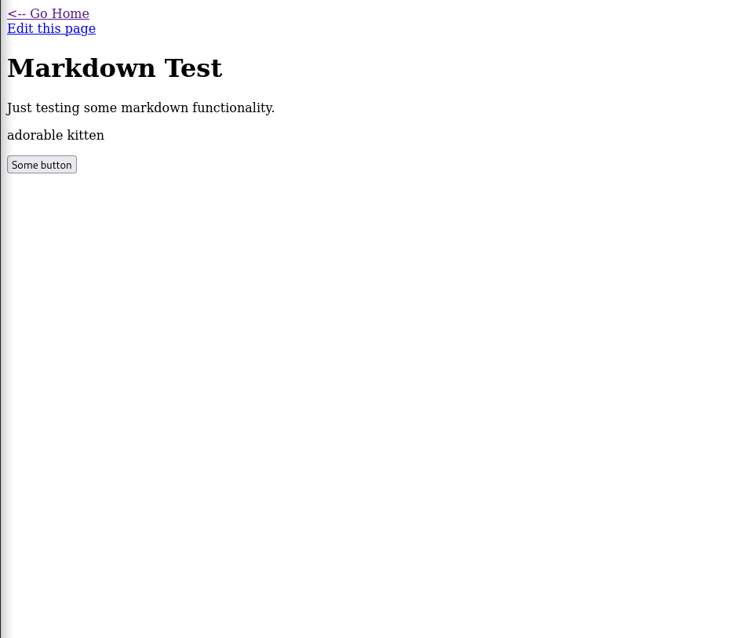
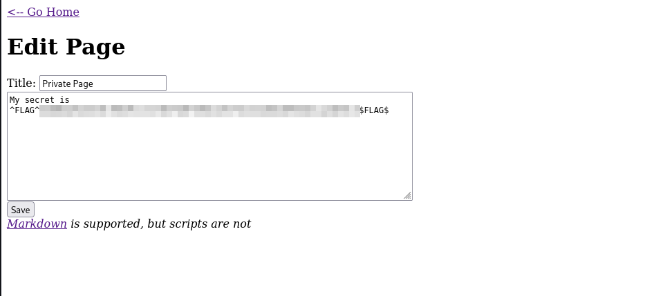
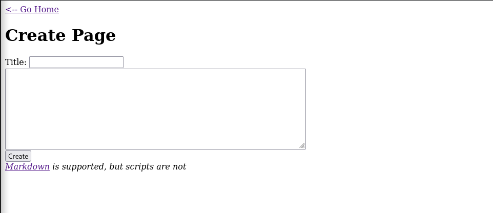
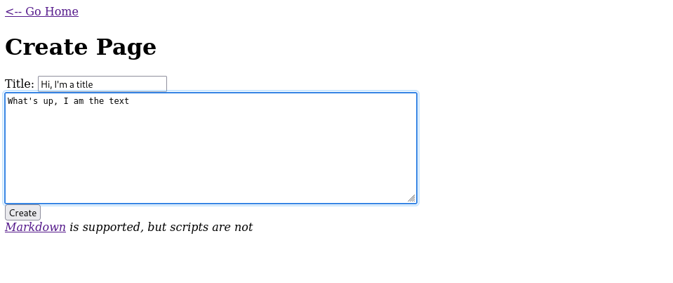
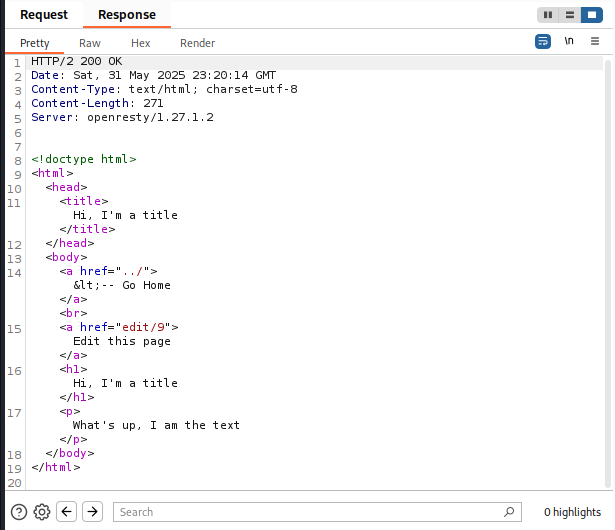

Micro CMSv1
Title: Micro-CMS v1 Difficulty: East Skills: Web Flags: 4
Walkthrough
Let’s start with the name: CMS is a Content Management System, so even before loading it up, I can see that it will probably be about some lightweight cms they give us
Loading the page we get: 
Plan of attack: Click on each option and peruse….
Selecting the Testing link brings you to a new page which I wil go into in a second, but first, I see this url:
https://9c01fd118736ac24fe91535c675778ec.ctf.hacker101.com/page/1
I see the “/page/1” at then end and am curious if there are more pages. Let’s start up burp and get the fuzzer working. (look at the how to page (if I have it up and running which it currently is not) to see how to fuzz on burp and how to connect burp to your browser)
As I wait to get burp started, here’s a quick tip: Use multiple monitors…. I am on my laptop and window management is a pain
In the intruder, I put marks around the 1 in the get request, select a payload of number from 1 to 100 and let it rip. I have the community edition so this may take a while.

I’m also quickly going to navigate the provided pages to see what numbers it gives me
Testing …. 1 Markdown Test …. 2
and thats it so far
Well, sorting by status codes gives me: page 1… 200 page 2… 200 and then page 4… 403 (forbidden) I like this page, we should try it later the rest give me 404 not found.
Back to page 1 (Testing) If I select Edit this page, it brings me here:  It tells me Markdown is supported but scripts are not.
I’m going to try a few things:
- Javascript in the Title field
- Javascript in the big textbox
- embedded code in the Markdown file
option 1 and 2 didnt work
I got fixated on option 3 and nothing was working, but in the process I had an idea. The response page returned a <h1>title</h1> for whatever was in the title field. So in the title field, I put </h1><a>test</a><h1> which closes the first h1 tag, makes my own a tag, and opens up another h1 tag to be closed
My though was maybe I can use this to find a link to some flag.txt page, but upon hitting save and Go Home it gave a pop up with a flag.
Wow. ok 1 down 3 to go.
So now we go to the Markdown Test page:  I see up top there is an “Edit this page” link and “Some button” down below. This screams “TWO FLAGS OVER HERE!” to me.
So we go to edit this page, I see that the button is simply created with html flags I know that any mention of the word “script” is banned, so maybe this will only be one flag? We shall see.
The page doesnt like to save when my proxy is connected so i shut it off. I’m keeping burp open though in case I need it. Never mind, I had to just restart the server… ok where was I
The button tags can use the onClick method to put in some javascript, but I don’t have a use for that now, so putting that in my back pocket.
Ok… a little bit random, but I realized the edit pages took you to https://<url>/pages/edit/<number>
so i went to the edit page for number 4 and got another flag…

Well.. I shut off my proxy cause I thought it was causing issues, so it took me a suuuper long time to find the 3rd flag. But once I reconnected it, I saw that after I edited the page (I’m sure it was there before too), I added onClick="alert(123) to the button tag to test it out, but in the response shown in burpsuit the button had a flag=<flag> attribute already associated. *sigh* sometimes it really is that easy.
Ok on to flag #4
For our last link: Create New Page  let’s just put some random content and look at the response
  cool little note, this created a page “page/9” and the edit page is “edit/9” which is pretty neat.
I’m gonna be honest, i’m a little stuck and started asking for hints. turns out, on the hits page, it says I found Flag 0, Flag 2, and Flag 3. Which means I’m missing flag 1.
I’m going to try and look at some of the other links again and see if I missed anything
Ok after some hints, I saw that there was a SQL injection in the url. Honestly, I never thought of that, I don’t think I realized urls could be subjected to SQLi but now I do
putting a single quote ' at the end of the url (page/edit/1’) gave me the flag
Lessons Learned
- Write down the actual received flags!! (even if you delete them later). In a few of the sections I got the same flag because I used the same method. They were slightly different versions of XSS in different pages and fields so I wasnt sure if it was the same flag or not. I kept submitting it, and hacker101 didn’t tell me if it was already submitted (it usually does give feedback i dont know why it is not right now) so just being able to check flags against submitted ones would be nice.
- As is the case in the last flag (or rather Flag 1 as hacker101 calls it) check for SQLi in URLs. this will help as I go through OWASP top 10. I should both check for each part of the list, as well as make sure im checking all aspects of the list. I guess the hard part is not knowing what you dont know.